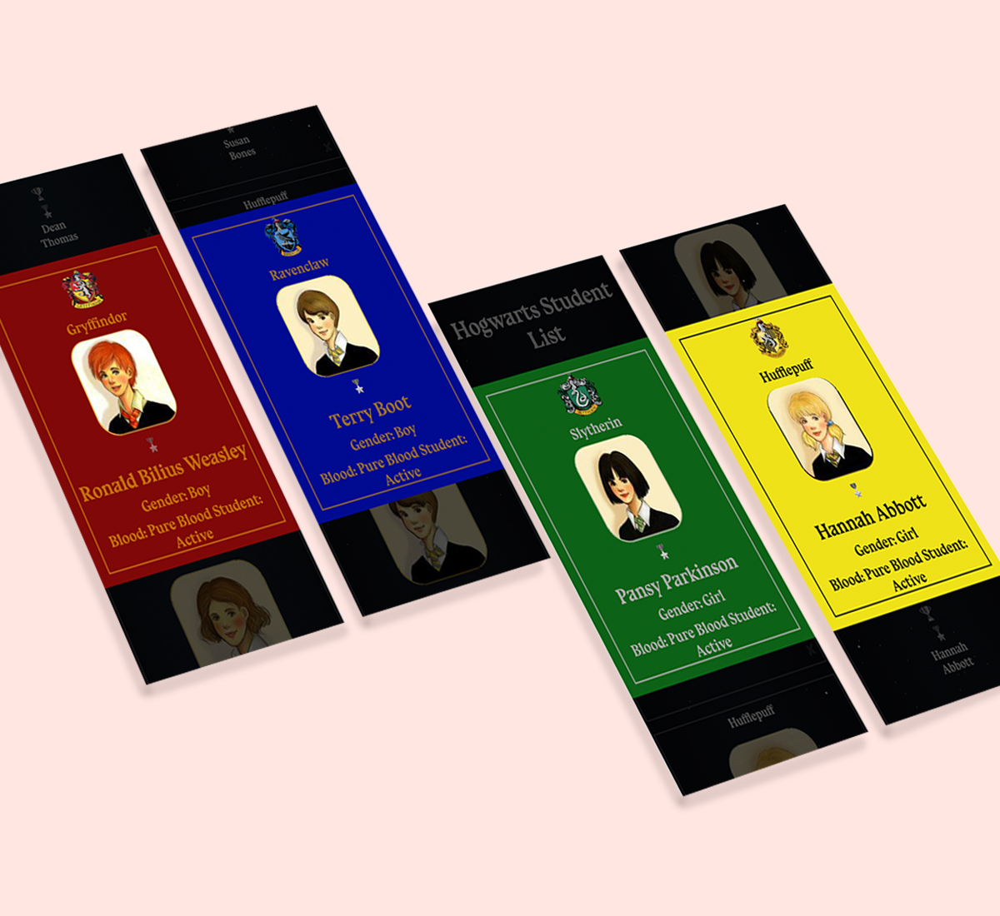
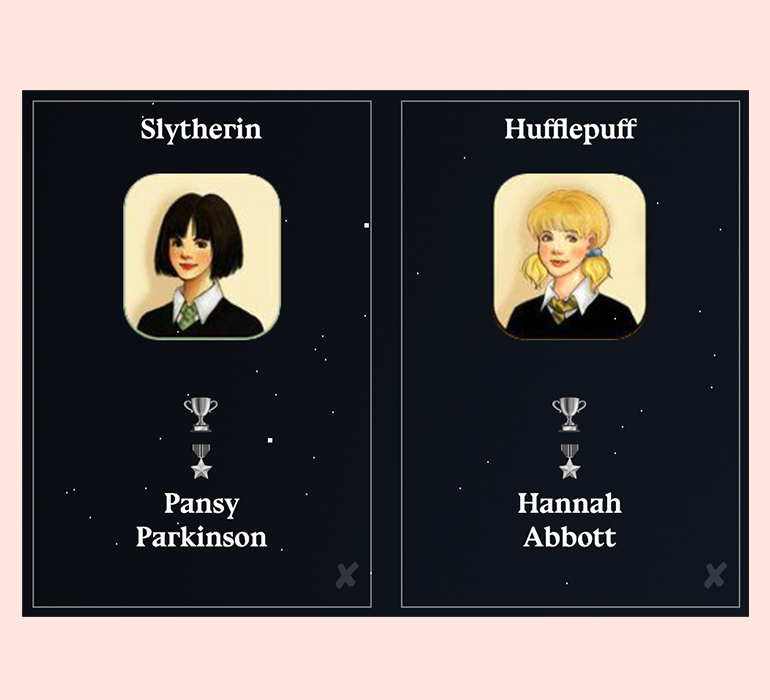
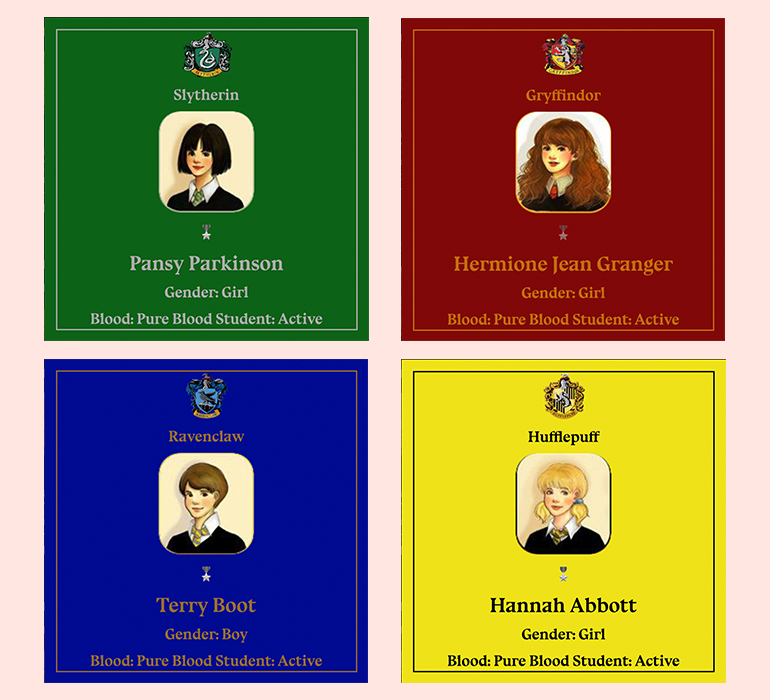
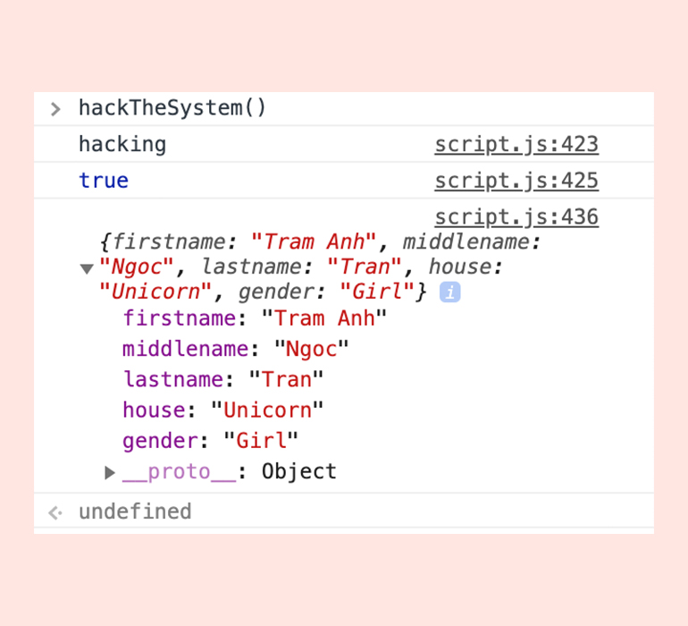

Hacked Hogwarts

SKILLS
HTML, CSS, JS
DESCRIPTION
For this project, I was "hired" as the frontender for Hogwarts School of Witchcraft and Wizardry, to build a system to help the administrators handle student lists. As test-data you are given the students from the infamous class of 1991.
My tasks were to provide an interface to show the list, sort by firstname, lastname, or house, as well as filter by house. Some students can be appointed to join the inquisitorial squad. I was also tasked with implementing racial profiling, by adding "blood-status" to each student.
I could hack into the system by typing keystroke only known by me, this would allow me to insert myself into the student list. It would also mix up the insquistorial squad and blood statuses.
LINK
http://tiffvoli.com/hacked-hogwarts/
-

Student Interface
The interface shows the students' fullname, house and options to turn them into a prefect and/or an insquistorial squad member. There is also an option to expel the student.
-

Student Modal
When the user clicks on a student, a pop-up would appear with the student's info with blood and student statuses. The colour would be the same as the student's house. -
Sorting | Filtering
There are options to filter the students into different houses. The user could also sort the students by lastname and firstname. -
Insquistorial Squad | Prefect
Anyone could become a member of the insquistorial squad, however only one person from each house could become a prefect and you could only have 2 prefects in total. -
Expel Students
The expelled student would be removed from the active student list. -

Hacked System
The hacking command would allow me to be inserted into the student list.